4.1 Khái niệm
Khi quản lý thông tin về một đối tượng, ta phải quản lý các thuộc tính liên quan đến đối tượng đó. Ví dụ, quản lý nhân viên thì cần quản lý tông tin của nhân viên như: họ tên, mã nhân viên, phái, năm sinh, nơi sinh, địa chỉ, mã ngạch, bậc, hệ số, lương, phụ cấp, chức vụ, … Đó là các thuộc tính phản ánh nội dung của một đối tượng quản lý. Các thuộc tính đó thường được biểu diễn dưới dạng các kiểu dữ liệu khác nhau (là chuỗi, số, ngày tháng,...) và được hợp nhất thành một đơn vị thông tin duy nhất gọi là bản ghi (record). Các bản ghi hợp thành một cơ sở dữ liệu.
Trong Excel, cơ sở dữ liệu có dạng như một danh sách. Ví dụ: danh sách nhân viên, danh sách hàng hóa, … Mỗi danh sách có thể gồm có một hay nhiều cột, mỗi cột được gọi là một trường (field) của cơ sở dữ liệu. Tên của cột sẽ được gọi là tên trường.
Hàng đầu tiên trong danh sách (cơ sở dữ liệu) chứa các tên trường được gọi là hàng tiêu đề (Header row), các hàng tiếp theo mỗi hàng là một bản ghi (record) cho biết thông tin về đối tượng mà ta quản lý.4.2 Sắp xếp dự liệu
Lệnh Data -> Sort dùng để sắp xếp các hàng hoặc các cột trong vùng được chọn theo thứ tự tùy chọn tương ứng khóa sắp xếp được chỉ định, vùng sắp xếp phải chọn tất cả các ô có liên hệ với nhau.
- Chọn vùng dữ liệu cần sắp xếp
Vào Data -> (Group Sort & Filter) -> Sort, xuất hiện hộp thoại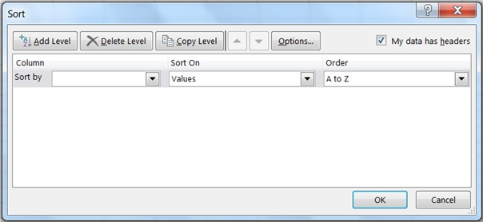
Hình 6.11. Hộp thoại Sort
o Sort by: Chọn khóa sắp xếp
o Sort On: Giá trị sắp xếp (giá trị, mầu nền, màu chữ, biểu tượng).
o Order: Thứ tự tăng dần hoặc giảm dần.
o Add Level: Thêm khóa sắp xếp, nếu dữ liệu trong cột khóa phía trên bị trùng.
o Copy Level: Copy điều kiện.
o Delete Level: Xóa điều kiện
o Nếu muốn sắp xếp theo hàng thì chọn nút lệnh Options của hộp thoại Sort, sau đó chọn mục Sort left to right.
Muốn sắp xếp nhanh theo cột nào đó thì đặt con trỏ vào ô bất kỳ của cột đó, Click chọn nút Sort A -> Z
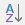
hoặc Sort Z -> A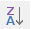
trên thanh công cụ chuẩn.4.3 Lọc dữ liệu Tự động- Nâng cao
4.3.1 Lọc dữ liệu tự động (AutoFilter)
Chức năng: Lệnh Data -> (Group Sort & Filter) -> Filter dùng để lọc các bản ghi thỏa mãn những tiêu chuẩn nào đó từ cơ sở dữ liệu ban đầu. Kết quả chỉ hiển thị những bản ghi thỏa mãn điều kiện. Những bản ghi còn lại sẽ tạm thời bị ẩn đi.
Thực hiện
- Chọn vùng CSDL với tiêu đề
- Chọn Tab Data -> (Group Sort & Filter) -> Filter. Excel sẽ tự động xuất hiện các nút thả cạnh tên field cho phép chọn điều kiện lọc tương ứng với các field đó.
- Chọn điều kiện lọc trong hộp liệt kê của từng field tương ứng.
- Chọn Text Fillter/Number Fillter để thực hiện chức năng lọc nâng cao theo yêu cầu của người dùng.
4.3.2 Lọc dữ liệu nâng cao (Advanced Filter)
Chức năng
Lệnh Data -> (Group Sort & Filter) -> Advanced dùng để trích ra các mẫu tin theo các điều kiện chỉ định trong vùng điều kiện được tạo trước.
Thực hiện
* Tạo vùng điều kiện lọc. Sử dụng một trong hai cách sau.
Cách 1: Sử dụng tên trường để tạo vùng điều kiện.
Vùng điều kiện sẽ có ít nhất hai hàng, hàng đầu chứa các tên trường (field) điều kiện, các hàng khác dùng để mô tả điều kiện.
- Chọn các ô trống trong bảng tính để làm vùng điều kiện
- Sao chép tên field điều kiện làm tiêu đề của vùng điều kiện.
- Nhập trực tiếp các điều kiện vào ô dưới tên trường tương ứng. Các điều kiện ghi trên cùng một hàng là các điều kiện thỏa nãm đồng thời (AND). Các điều kiện ghi trên các dòng khác nhau là những điều kiện thỏa mãn không đồng thời (OR)
Ví dụ:
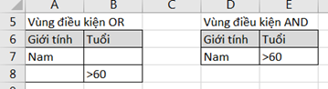
Cách 2: Sử dụng công thức để tạo vùng điều kiện.
Vùng điều kiện sẽ có 2 ô. Ô trên chứa tiêu đề hoặc bỏ trống nhưng phải khác với tên trường, ô dưới là công thức mô tả điều kiện.
- Chọn 2 ô trống trong bảng tính để làm vùng tiêu chuẩn.
- Nhập tiêu đề ở ô trên của vùng tiêu chuẩn
- Nhập công thức vào ô bên dưới mô tả điều kiện. Dùng bản ghi đầu tiêu trong cơ sở dữ liệu để đặt điều kiện so sánh. Hàm AND dùng để lập các điều kiện thỏa mãn đồng thời, hàm OR dùng để lập các điều kiện thỏa mãn không đồng thời.
* Vào Data à (Group Sort & Filter) à Advancel, xuất hiện hộp thoại có các tùy chọn sau
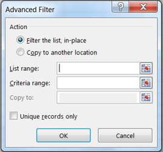
- Action:
o Filter the list, in-place: kết quả hiển thị trực tiếp trên vùng CSDL
o Copy to another location: kết quả được đặt tại một vị trí khác
- List range: Chọn địa chỉ vùng CSDL
- Criteria range: Chọn địa chỉ vùng tiêu chuẩn
- Copy to: Chọn địa chỉ của ô đầu tiên trong vùng kết quả (phải chọn mục Copy to another location).
- Unique records only: Nếu có nhiều bản ghi giống nhau thì chỉ lấy duy nhất một bản ghi đại diện. Ngược lại, lấy hết các mẫu tin thỏa mãn điều kiện của vùng tiêu chuẩn (dù giống nhau).
4.4 Các hàm Cơ sở dữ liệu
Các hàm cơ sở dữ liệu mang tính chất thống kê những bản ghi trong CSDL có trường thỏa mãn điều kiện của vùng tiêu chuẩn đã được thiết lập trước.
Cú pháp chung
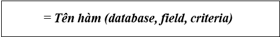
- Database: Địa chỉ vùng CSDL (Chọn địa chỉ tuyệt đối để sao chép).
- Field: Cột cần tính toán, field có thể là tên trường, địa chỉ của ô tên trường (field) hoặc số thứ tự của trường đó (cột thứ nhất của vùng CSDL đã chọn tính là 1 và tăng dần sang trái).
- Criteria: Địa chỉ vùng điều kiện
Ví dụ: Ta có một cơ sở dữ liệu như sau: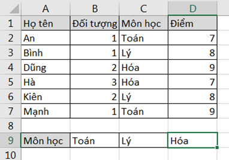
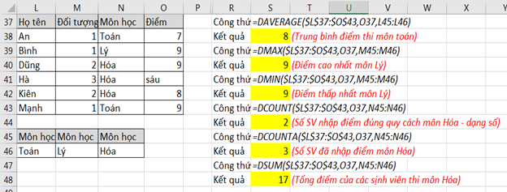
Hình 6.12 Các hàm về Cơ sở dữ liệu
* Một số hàm thông dụng về CSDL:
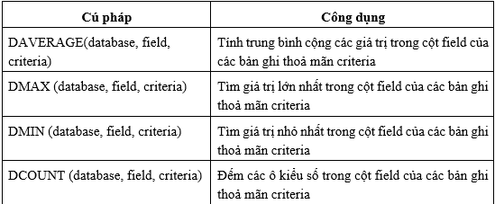
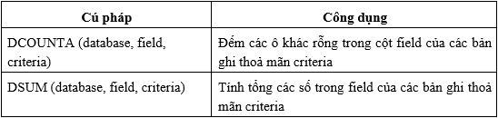
Bảng 2-8 Các hàm về cơ sở dữ liệu
4.5 Subtotals
* Chức năng
Thống kê dữ liệu theo từng nhóm trong CSDL.
* Thực hiện
Xét cơ sở dữ liệu BẢNG LƯƠNG dưới đây. Vấn đề đặt ra là cần tình tổng tiền lương theo từng nhóm Đơnvị.
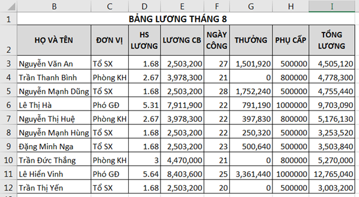
o Dùng lệnh Data à (Group Sort & Filter) à Sort để sắp xếp dữ liệu theo Đơn vị. Mục đích để các bản ghi có cùng đơn vị nằm liền kề nhau.
o Chọn bảng CSDL cần tổng hợp với tiêu đề là một hàng
o Vào Data à (Group Outline) àSubtotals, xuất hiện hộp thoại Subtotal với các tùy chọn sau:
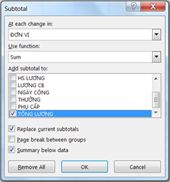
§ At each change in: Chọn tên trường cần tổng hợp
§ Use function: Chọn hàm sử dụng tính toán hay thống kê
§ Add subtotal to: Chọn tên trường chứa dữ liệu cần thực hiện tính toán hay thống kê
§ Replace current subtotals: Thay thế các dòng tổng hợp cũ để ghi dòng tổng hợp mới.
§ Page break between groups: Tạo ngắt trang giữa các nhóm
§ Summary below data: Thêm dòng tổng hợp sau mỗi nhóm.
Kết quả Subtotal
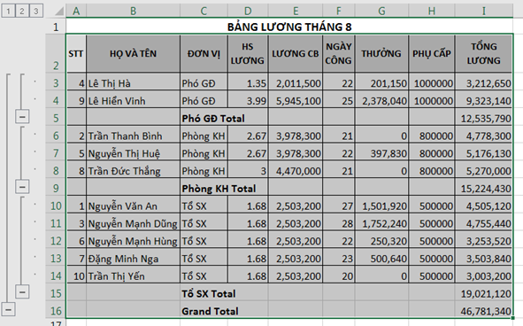
Hình 6.13. Kết quả Subtotal – Chế độ hiển thị All Recrord
* Làm việc với màn hình kết quả sau khi tổng hợp
Click vào nút
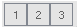
để chọn các mức dữ liệu bạn muốn xem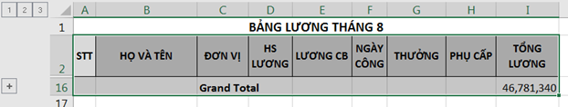
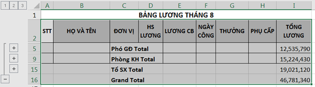